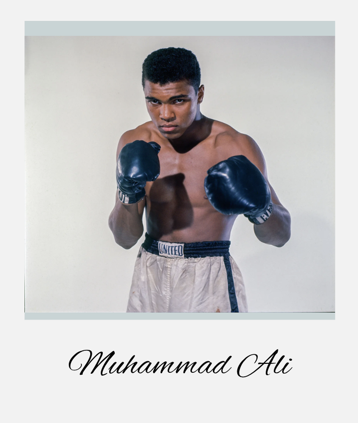
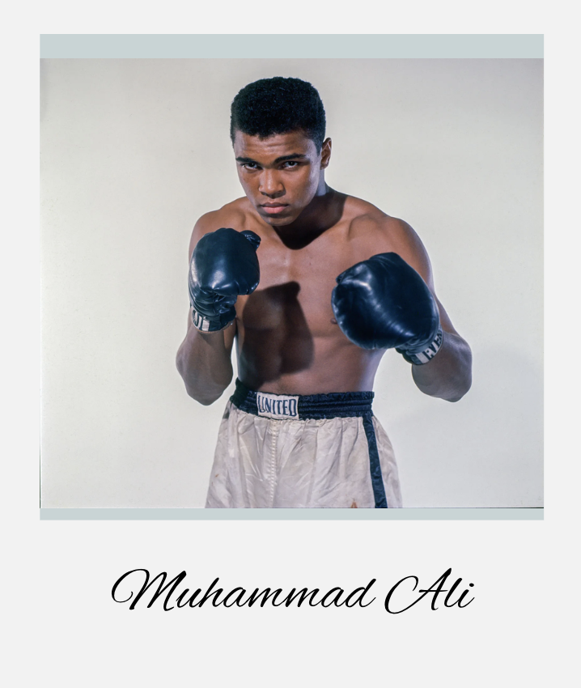

A Deeper Look into Parkinson's
What if the way you typed could tell a story about your brain health? Parkinson's Disease, a condition affecting millions, often whispers its first signs in the subtle changes to our everyday movements.
Every six minutes, someone in the United States is diagnosed with Parkinson's Disease. That's over 90,000 people each year facing a future with this progressive neurological disorder. For many, including beloved figures like Michael J. Fox and Muhammad Ali, the journey with Parkinson's is a public one, but for countless others, it's a personal battle fought with courage and resilience. This project is inspired by the need to bring greater understanding to a condition that touches so many lives, often silently at first.
Our Research Question
How can interactive data visualizations make the complex motor symptoms of Parkinson's Disease, particularly those detectable through fine motor tasks like hand movements and typing, more tangible and understandable for a general audience, thereby fostering empathy and awareness?


Motor Symptoms & The Hand
The symptoms you explore here – changes in hand function – are not just data points; they translate into daily challenges. Difficulty with writing can make signing documents or writing notes frustrating. Tremors or rigidity can make buttoning a shirt, using utensils, or holding a cup a slow and arduous process, impacting independence. These seemingly small motor changes can accumulate, affecting one's ability to perform daily activities.
How to Use This Visualization
- Explore the Model: Use your mouse to rotate the 3D hand model. Zoom in and out using your scroll wheel or pinch gestures.
- Hover for Info: Move your cursor over different parts of the hand (fingers, palm, wrist). Highlighted areas will display a tooltip with information about how Parkinson's can affect that specific part.
- What to Look For: Notice which areas are commonly impacted. Think about how these specific effects (e.g., tremor in the thumb, rigidity in the wrist) might translate to difficulties with daily tasks like writing or gripping objects.
The way Parkinson's affects the hands gives us a glimpse into its impact on fine motor control. But what about other everyday actions that require similar precision, like typing? The rhythm of our keystrokes can also tell a subtle story. Let's explore how these digital fingerprints can change, drawing upon our understanding of Parkinson's medications.
Typing Rhythm & Medication
The consistency of motor actions, like typing, can be altered by Parkinson's. This interactive "pulse" demonstrates representative typing rhythms. Select a medication category to see how treatment might influence these patterns. Below, a line chart visualizes Hold or Flight Times for a sequence of keystrokes.
Tempo:
1x
Hold Time: - ms
Flight Time: - ms
Chart Metric:
Show on Chart:
How to Use This Visualization
- Select Medication (for PULSE): Click on the medication buttons ("Levodopa," "DA," etc.) to load representative typing rhythm data for the "PULSE" animation for individuals on different treatments, or those with no medication. This draws from the Tappy Keystroke Dataset.
- Observe the PULSE: The large "PULSE" button will animate to simulate
keystrokes based on your selection.
- The duration it stays lit represents "Hold Time" (how long a key is pressed).
- The time between illuminations represents "Flight Time" (the delay between one key release and the next key press).
- Adjust Tempo: Use the "Tempo" slider to speed up or slow down the simulation. This can help you better perceive the rhythm.
- Information Box: The box below the pulse will display the Hold Time and Flight Time values for the current simulated keystroke from your selection.
- Interpret the Line Chart:
- The chart below the PULSE button displays either Hold Times or Flight Times for a sequence of keystrokes. Use the "Chart Metric" toggles to switch between them.
- Use the "Show on Chart" checkboxes to select which medication lines are visible.
- Each colored line represents a different medication category.
- The X-axis shows the keystroke event index.
- The Y-axis shows the selected metric (Hold Time or Flight Time) in milliseconds (ms).
- When the "PULSE" button animates, a marker will appear on the chart highlighting the current data point for the active medication's line (if visible).
- Observe how patterns (level, variability) differ across medications and metrics.
- What to Look For: Pay attention to the consistency of the hold times and flight times in the PULSE animation. Are they regular, or do they vary significantly? How does the rhythm change when you select different medication categories for the PULSE? Compare this to the overall trends and variability visible in the line chart.
We've seen a simulation of how typing rhythms can differ. Now, you have the chance to (simulatively) compare your own typing patterns against a representative example from the Tappy dataset, illustrating how technology might one day help us understand these nuances even better.
"I have Parkinson's disease. I am not Parkinson's disease. My identity is not based on the illness, but on who I am as a person. It is a part of my life, not the entirety of it."
Analyze Your Typing Patterns
Changes in typing speed and accuracy can be a significant hurdle for those with Parkinson's who rely on computers. Simple tasks like sending an email or navigating a smartphone may take longer and require more effort. This interactive test allows you to explore these nuances.
How to Use This Visualization
- Select a Comparison Persona: Use the dropdown menu to choose a de-identified persona whose typing data (representing a pattern seen in some individuals with Parkinson's from the Tappy dataset) will be compared against yours.
- Start Typing: Click the "Click to start" overlay. A sentence will appear. Type the displayed sentence; your typing will appear over the prompt.
- View Real-time Chart: As you type, a line chart will plot your latency (time between keystrokes) in one color, and the selected persona's latency in another.
- Interpret the Chart:
- The X-axis shows the character index (which keystroke in the sequence).
- The Y-axis shows the latency in milliseconds (ms).
- What to Look For: Compare your line to the persona's line. Is your average latency generally higher or lower? Is your line smoother or more "spiky" (variable)?
- Reset: Click the "Reset" button to try again with a new sentence or a different comparison persona.
Click to start
Key Takeaways & Conclusion
One Clear, Memorable Message
Technology offers powerful new lenses to understand and potentially detect subtle changes in motor function, highlighting that even everyday actions like typing can hold valuable insights into neurological health.
Why Our Visualizations Demonstrate This
Our interactive hand model makes the physical impact of Parkinson's tangible, while the typing rhythm simulation and analysis tool directly connect a common digital interaction to the underlying motor control challenges. By allowing users to see, feel, and even contribute their own (simulated) data, these visualizations powerfully illustrate how technology, using datasets like Tappy, can decode the nuanced language of movement.
Call to Action: Learn More & Take Action
Empower yourself with knowledge. Explore the resources linked in the next section to learn more about Parkinson's Disease, support research, or find help if you or a loved one are affected. Consider how technology in your own life might be leveraged for health awareness and discuss any concerns about motor symptoms with a healthcare professional. Early understanding and action can make a significant difference.
Resources and Support
Links to Parkinson's Organizations
- Parkinson's Foundation: www.parkinson.org - Comprehensive information, resources, and support for patients and families.
- The Michael J. Fox Foundation for Parkinson's Research: www.michaeljfox.org - Leading research initiatives and patient advocacy.
- American Parkinson Disease Association (APDA): www.apdaparkinson.org - Support, education, and research programs.
Further Reading and Research
- Explore the "Understanding Parkinson's" section on the Parkinson's Foundation website.
- Search for "keystroke dynamics Parkinson's disease" on Google Scholar or PubMed for research articles.
- Visit the National Institute of Neurological Disorders and Stroke (NINDS) Parkinson's Disease Information Page.
- Tappy Keystroke Dataset on PhysioNet: For those interested in the source data: https://physionet.org/content/tappy/1.0.0/
Support Resources for Patients and Families
- Helplines: Many Parkinson's organizations offer toll-free helplines for
information and support.
- Parkinson's Foundation Helpline: 1-800-4PD-INFO (473-4636)
- Support Groups: Local and online support groups provide a valuable way to connect with others affected by Parkinson's. Check the websites of the major organizations for listings.
- Educational Materials: Brochures, webinars, and articles are widely available from the organizations listed above.